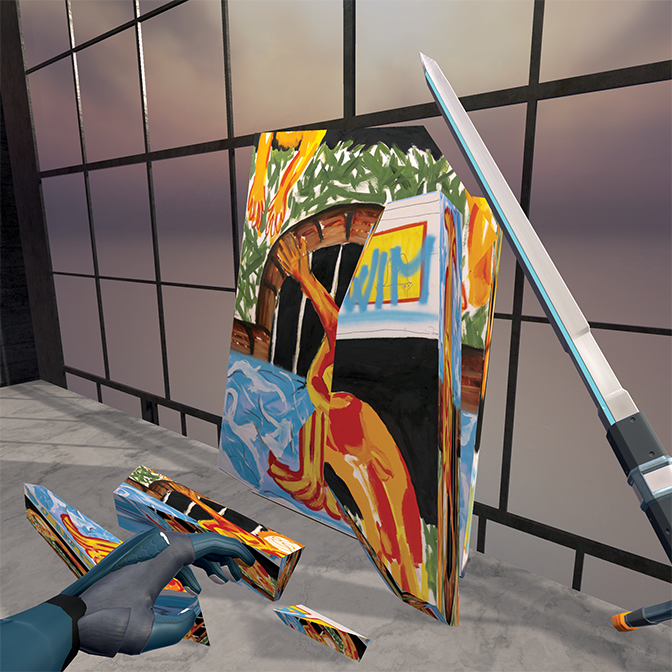
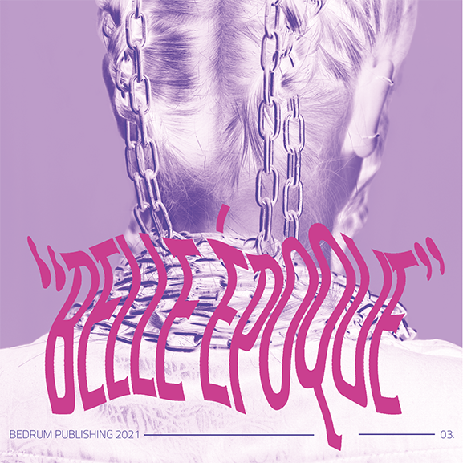
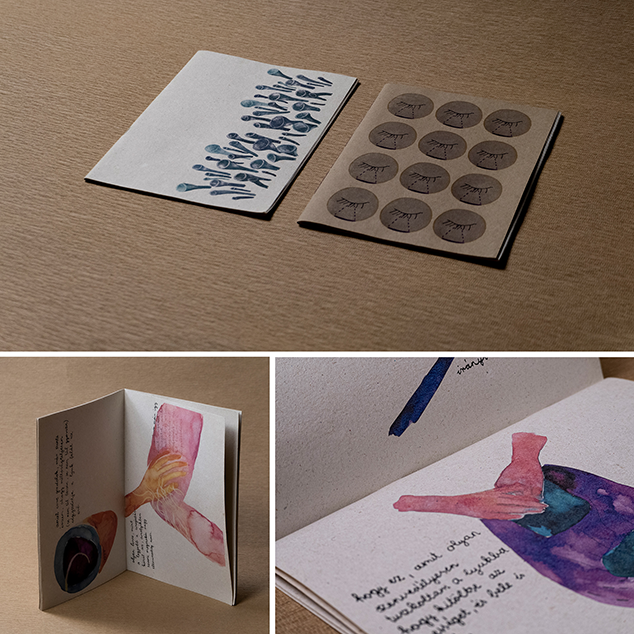
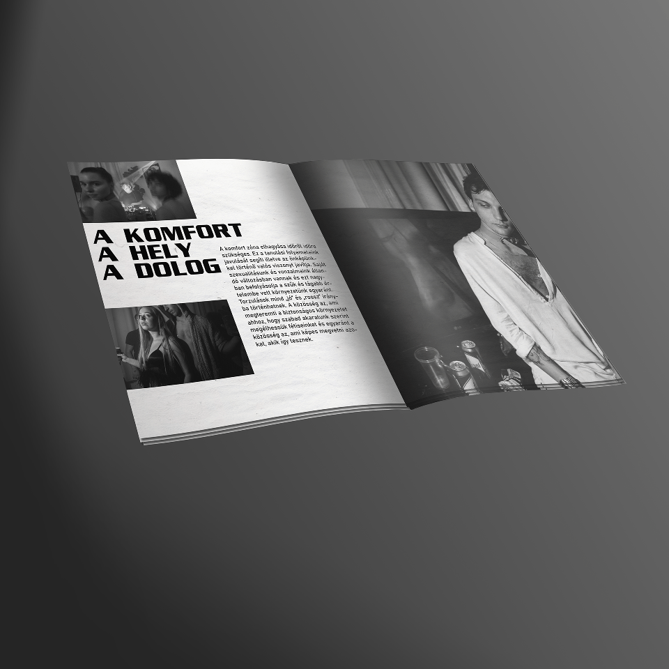
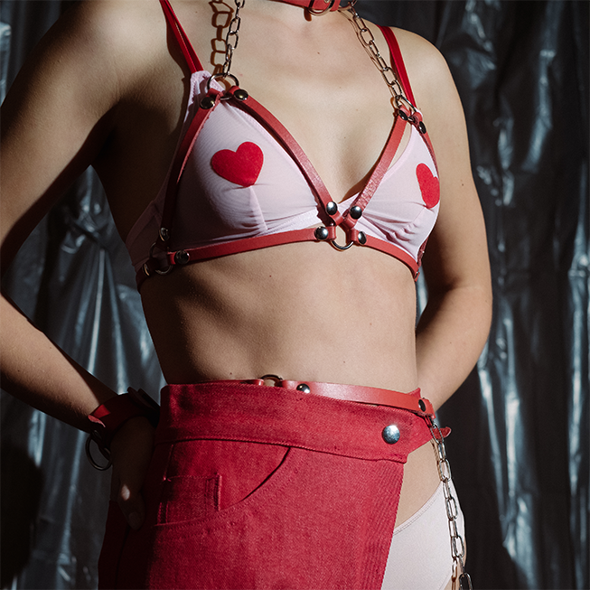
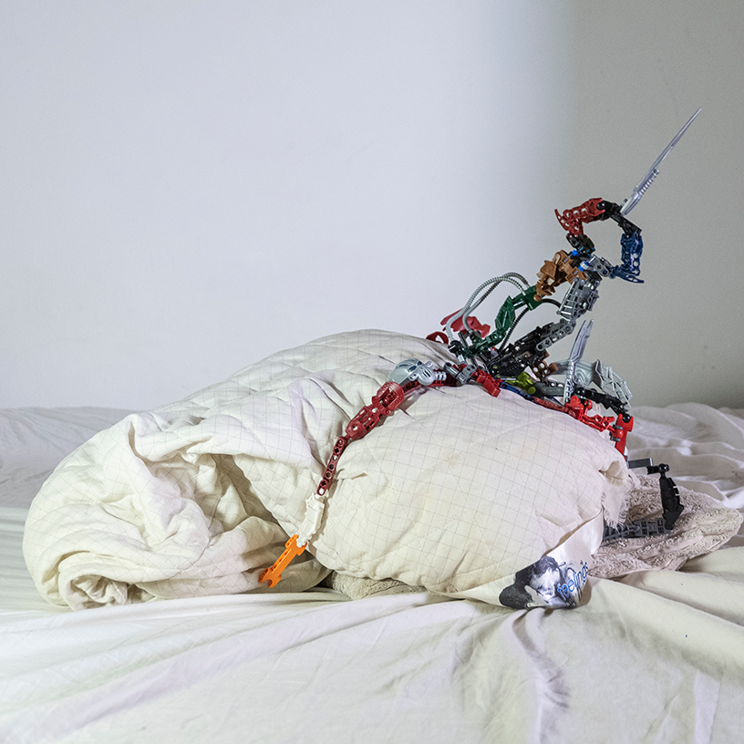

Gallery Destroyer 2020
An FPS (First Person Shooter), a space-simulator computer game that is a crossover, multimedia artwork. Gallery Destroyer 2020, is a virtual exhibition space as well, sort of a utopian, personal-memory-storage for the artworks.
This was my diploma project in my last university year, also an unfinished/ongoing project.

"Belle Époque"
A project by Szabolcs Lajos Varga, Vivien Varga, Zsófia Antalka and Anna Palkó. Hairstylist, Vivien Varga's portfolio photoshooting.

Association with Zsófia Kenesei
During of the collaborative period, We worked together to bring her creative visions alive.
This includes a video documentation of the live reading session as well as two self-published zine series.
This collaboration generated organically, since we were studying in the same university in the same department under the guidance of the late László László Révész.

"The weekend-graphic-designer"
I have always had a strong urge or motivation to do my own graphic related task for my artistic career. During my university years I experienced with softwares like InDesign, Photoshop etc… Obviously I made huge mistakes from a graphic designer’s perspective, but
I also attended projects that I am very proud of. This collection includes my favorite ones.

Soft Play
The project called “Soft Play” is a fetish inspired, thematic photoshoot that We organized for one of our flat parties. This was my first group project that I have taken part in, and also taken part in the organizing part as well. The occasion showed me that the power of a handful of creative people's work could create the quality that I have always liked and wanted. This was the source of my inspiration to attend more group work and that led me in the future to more collaborations.

A trophy of toxic masculinity
In 2021 I made a wearable prosthesis artwork for our main lesson, Contemporary Thematic Tendencies. This lesson built around the idea of functionality and wearability in art. I made this object with BIONICLE LEGO products.
“The term 'prosthetic' is now attributed to the branch of surgery dedicated to replacing missing or defective limbs, but to the Ancient Greeks it was an altogether more assertive concept meaning 'to add', 'to advance' or 'to give power to.'”